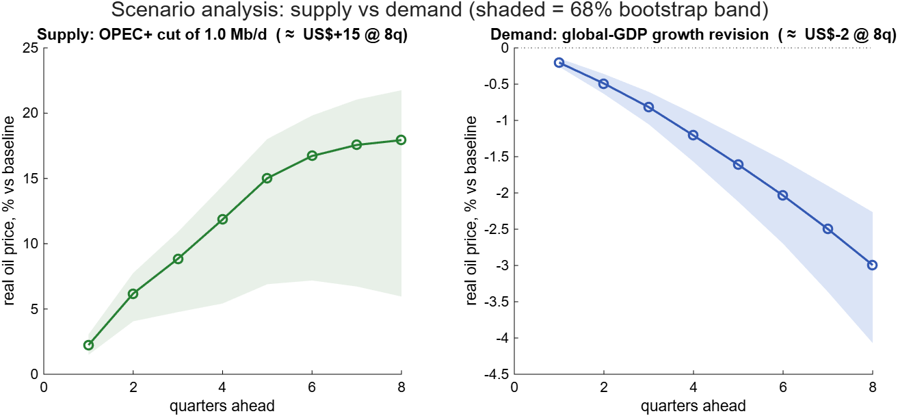
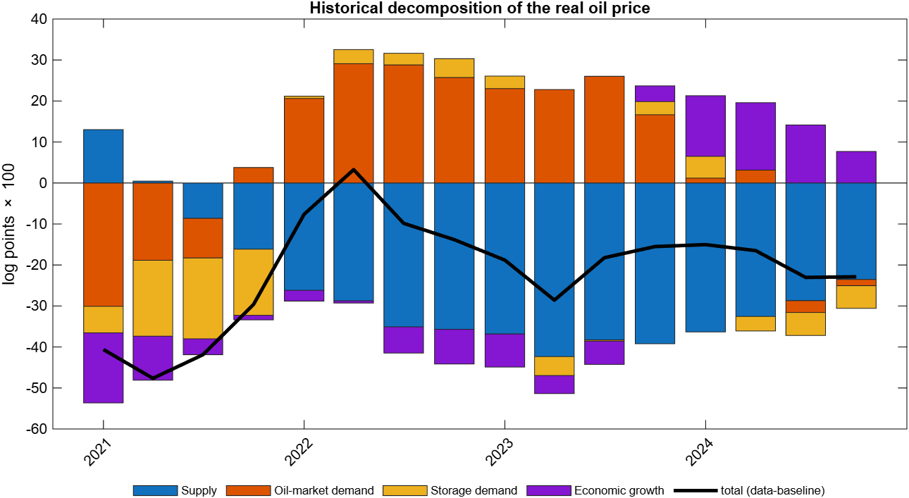
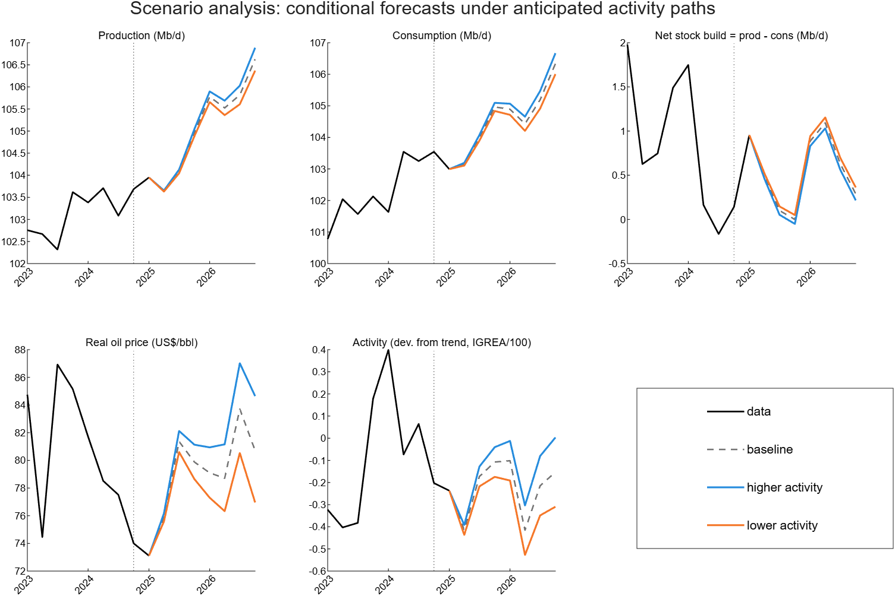
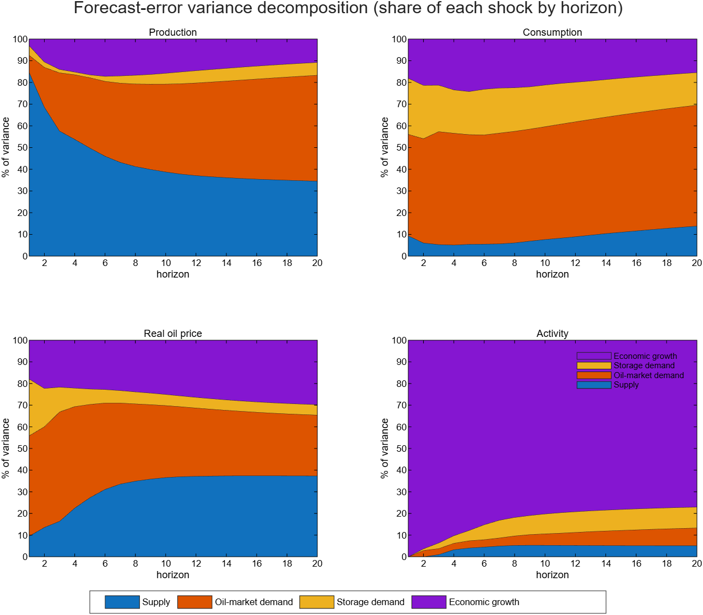
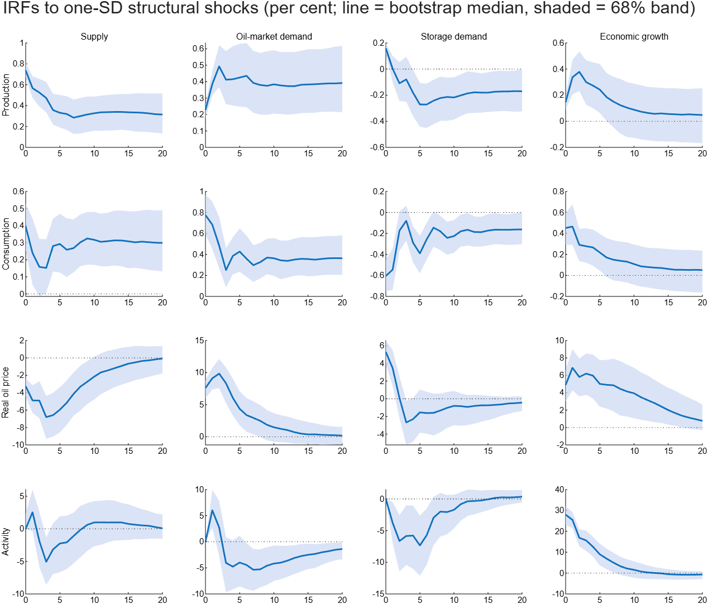

Code, replications, and side projects that sit outside my main research agenda.
Conditional Forecasting with Uncertainty in a Monetary VAR


Description
A self-contained MATLAB package that replicates and then extends the risk-scenario exercise of Moran, Stevanovic and Surprenant (2025), Bank of Canada Staff Working Paper 2025–28, Risk Scenarios and Macroeconomic Forecasts. A monthly Bayesian VAR for Canada is estimated under a Minnesota prior, and alternative paths for selected variables are imposed with the Waggoner–Zha conditional-forecasting algorithm. The extension is about uncertainty: scenarios are reported as fan charts rather than single lines, with confidence bands that separate the shock uncertainty available in closed form from the parameter uncertainty drawn from the posterior. The toolbox also handles softly-held conditions, joint multi-variable scenarios — such as a stagflation path that fixes prices and unemployment simultaneously — and historical counterfactuals that re-run the sample with a single structural shock overridden. An interactive browser dashboard lets you build scenarios and counterfactuals live and watch the bands update, and a companion methods note works through every derivation, including the implications of the Cholesky timing restrictions used for identification. Canadian data come from Statistics Canada and FRED; the code needs no MATLAB toolbox and runs under Octave.
A Structural VAR of the Global Oil Market: A Replication





Description
A self-contained MATLAB replication of Reinhard Ellwanger (2019), Bank of Canada Staff Analytical Note 2019–17, A Structural Model of the Global Oil Market. A four-variable structural VAR — oil production, consumption, the real price of oil and global activity — is identified through the note's elasticity impact matrix, with the short-run price elasticity of oil supply fixed as the single identifying restriction, recovering four structural shocks (supply, oil-market-specific demand, storage demand and economic growth). The exercise runs on public proxies — Brent deflated by US CPI, EIA STEO world production and consumption, and Kilian's index of global real economic activity — so it reproduces the model's structure and qualitative story rather than the note's exact numbers. It reports impulse responses, a forecast-error variance decomposition, a historical decomposition of the real price, and one supply-side and one demand/growth-side scenario, all with moving-block bootstrap bands. A companion methods note works through the identification of the impact matrix and the results. Data loaders are local-first and the code runs in base MATLAB.
The St. Louis Fed DSGE Model: A Replication


| Year (Q4) | Output growth | Core PCE inflation | Fed funds rate | Natural rate r* | Output gap |
|---|---|---|---|---|---|
| 2026 | 1.1 | 3.1 | 3.7 | 1.1 | −0.3 |
| 2027 | 2.1 | 1.8 | 3.0 | 0.7 | −0.2 |
| 2028 | 2.2 | 1.8 | 2.7 | 0.6 | 0.1 |
| 2029 | 2.0 | 2.0 | 2.7 | 0.6 | 0.2 |
| Longer run | 1.9 | 2.0 | 2.7 | 0.4 | 0.0 |
Description
A replication of Martín Faria-e-Castro (2026), The St. Louis Fed DSGE Model, Federal Reserve Bank of St. Louis, rebuilt from scratch in Dynare and estimated on US data 1959Q1 to 2026Q1. The model is a medium-scale New Keynesian economy with two-agent (worker/capitalist) household heterogeneity, an explicit fiscal block with distortionary taxes, transfers and government debt, oil as both a production input and a consumption good, a convenience yield on government debt, and two stochastic trends. The 63 free parameters are estimated by random-walk Metropolis-Hastings (12 chains); 57 of the 63 posterior means fall inside the paper's 90% credible intervals. The replication reproduces the paper's historical shock decompositions, forecast-error variance decompositions, impulse responses, a model-consistent natural rate r* against external measures, and the unconditional and conditional forecasts, including its Table 5. It adds a flexible-price, flexible-wage block that generates r* and the output gap, and a companion note that re-derives every equilibrium condition from microfoundations. The remaining forecast-table differences can be attributed to data-anchored trend-growth and inflation-target estimates.